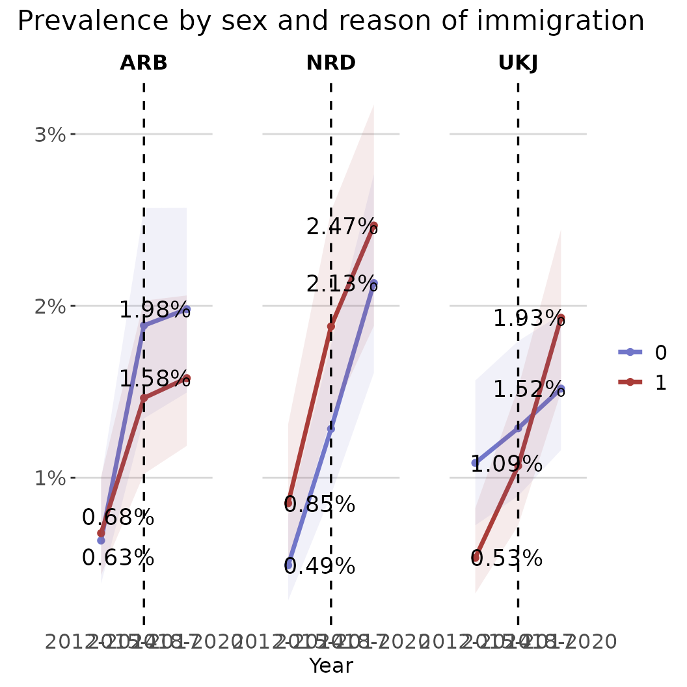
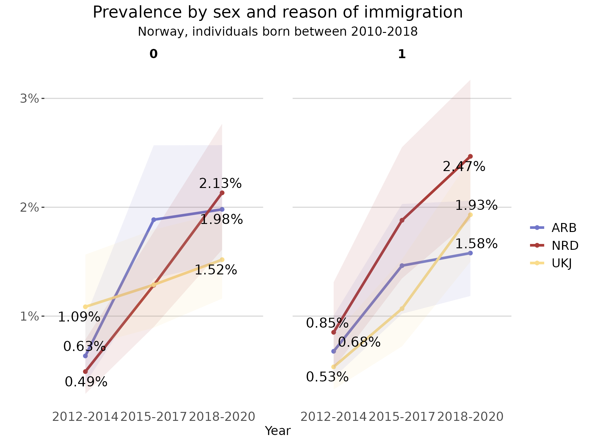

regtools aims to facilitate the manipulation, analysis and visualization of data from Norwegian health and population registers and capitalize on their characteristics.
Researchers with access to microdata from health and/or administrative registers in Norway can use regtools to streamline their initial analytical processes. The package includes functions for data pre-processing, linkage, and the computation of relevant statistics and visualizations, such as stratified frequencies, incidence and prevalence rates.
This vignette introduces regtools’s main functions
and shows examples of how to use them with individual-level data. The
package also includes some helper functions that can aid researchers
working with registry data in Norway address specific problems, more
information in the vignette("h-functions") and
vignette("other-useful-fun").
Example datasets
To exemplify the main functions of the package, we have included a couple of illustrative simulated datasets. These datasets are also used in the examples specified in the functions’ documentation.
The dataset diag_df is a tibble with simulated
individual-level diagnostic data. It is documented in
?diag_df
str(diag_df)
#> tibble [120,256 × 3] (S3: tbl_df/tbl/data.frame)
#> $ id : chr [1:120256] "P000000704" "P000000704" "P000000704" "P000000704" ...
#> $ code : chr [1:120256] "F4522" "F305" "F65" "F840" ...
#> $ diag_year: int [1:120256] 2016 2020 2014 2017 2014 2017 2018 2020 2016 2013 ...The dataset var_df is a tibble with simulated
individual-level time-varying data. It is documented in
?var_df
str(var_df)
#> tibble [270,216 × 3] (S3: tbl_df/tbl/data.frame)
#> $ id : chr [1:270216] "P000000037" "P000000037" "P000000037" "P000000037" ...
#> $ year_varying: int [1:270216] 2012 2013 2014 2015 2016 2017 2018 2019 2020 2012 ...
#> $ varying_code: chr [1:270216] "0815" "0815" "0815" "0815" ...The dataset invar_df is a tibble with simulated
individual-level time-invariant data. It is documented in
?invar_df
str(invar_df)
#> tibble [30,024 × 4] (S3: tbl_df/tbl/data.frame)
#> $ id : chr [1:30024] "P000000037" "P000000052" "P000000059" "P000000111" ...
#> $ sex : Factor w/ 2 levels "0","1": 1 1 1 2 2 1 2 1 1 1 ...
#> $ y_birth : int [1:30024] 2008 2000 2007 2003 2000 2003 2009 2005 2004 2002 ...
#> $ innvandringsgrunn: chr [1:30024] "FAMM" "FAMM" "FAMM" "FAMM" ...All the datasets above have been created using the
synthetic_dataset() function included in this package. The
exact code used to create them can be found in the folder
/data-raw in the package’s source code. The
vignette("h_functions") includes more detailed information
about simulating datasets in regtools.
Data reading and validation
Generally, researchers using Norwegian individual-level registry data for epidemiological research will access datasets that fall into one of the following three categories:
Diagnostic data: at least including unique personal identifier (ID), date of diagnostic event, and diagnosis code (such as ICD-10 or ICPC-2). For instance, datasets from NPR (Norwegian Patient Registry) or KPR (Kommunalt pasient- og brukerregister).
Time-invariant administrative data: administrative sociodemographic data that does not change for a given individual in the population such as date of birth, immigration background, etc.
Time-varying administrative data: administrative sociodemographic data that can change for a given individual in the population, such as place of residence or marital status. This type of information usually is updated quarterly or yearly in administrative registries.
Assuming a researcher would want to compute prevalence rates for a certain diagnosis stratified by some sociodemographic characteristic(s), they would at least need a diagnostic dataset and at least one administrative dataset.
The functions read_diag_data() and
read_admin_data() check the datasets’ minimum requirements
given the users expectations about what they contain, read them into
memory, and give a quick summary of their structure. For example, in the
case of a dataset the user has identified as containing
time-invariant data, it is assumed that each row in the dataset
corresponds to a individual identified by a unique personal identifier.
To allow the package to check that the dataset meets minimum
requirements for being useable time-invariant data, it is
necessary for the user to specify some of the column names - i.e.,
corresponding to the id or date variables (see the function
documentation for more info).
📝 Note: these functions only check for minimum requirements; datasets may contain additional variables/columns. For example, diagnostic data sometimes includes sex and age information for each individual, even though these are not minimally required for this data type.
The read_..._data() functions support common file
formats that researchers might realistically encounter in data
deliveries, such as CSV, SAV, and parquet files. Parquet files
are specially useful when working with very large data, as the storage
and data processing is more efficient than other types of file formats
(e.g. CSV files). As explained in the
vignette("parquet-files"), using parquet files is
recommended for large and larger-than-memory data within
regtools. The vignette also includes general
instructions on how to write/save parquet datasets.
Read example diagnostic data
To read and validate the minimum requirements of a CSV file containing diagnostic data:
diag_csv <- system.file("extdata", "diag_data.csv", package = "regtools")
diag_data_validated <- regtools::read_diag_data(
diag_csv,
id_col = "id",
date_col = "diag_year",
log_path = log_file
)
#> Reading /home/runner/.cache/R/renv/library/regtools-66178653/linux-ubuntu-noble/R-4.5/x86_64-pc-linux-gnu/regtools/extdata/diag_data.csv file...
#> ✔ Successfully read file: /home/runner/.cache/R/renv/library/regtools-66178653/linux-ubuntu-noble/R-4.5/x86_64-pc-linux-gnu/regtools/extdata/diag_data.csv
#> Checking column requirements:
#> ✔ ID column
#> ✔ Code column
#> ✔ Date column
#>
#> ────────────────────────────────────────────────────────────────────────────────
#> Diagnostic dataset successfully read and columns validated
#>
#>
#> ── Data Summary ────────────────────────────────────────────────────────────────
#> ℹ Number of rows: 120256. Number of columns: 3.
#>
#>
#> Rows: 120,256
#> Columns: 3
#> $ id <chr> "P000000704", "P000000704", "P000000704", "P000000704", "P00…
#> $ code <chr> "F4522", "F305", "F65", "F840", "F728", "F450", "F187", "F73…
#> $ diag_year <int> 2016, 2020, 2014, 2017, 2014, 2017, 2018, 2020, 2016, 2013, …Read example administrative data
Similarly, to read and validate the minimum requirements of a CSV file containing time invariant data:
demo_csv <- system.file("extdata", "invar_data.csv", package = "regtools")
demo_data_validated <- read_admin_data(
demo_csv,
data_type = "t_invariant",
id_col = "id",
log_path = log_file
)
#> Reading /home/runner/.cache/R/renv/library/regtools-66178653/linux-ubuntu-noble/R-4.5/x86_64-pc-linux-gnu/regtools/extdata/invar_data.csv file...
#> ✔ Successfully read file: /home/runner/.cache/R/renv/library/regtools-66178653/linux-ubuntu-noble/R-4.5/x86_64-pc-linux-gnu/regtools/extdata/invar_data.csv
#> Checking column requirements:
#> ✔ ID column
#> Data type: time invariant. Checking requirements...
#> ✔ No duplicate IDs
#>
#> ────────────────────────────────────────────────────────────────────────────────
#> Administrative (sociodemographic) dataset successfully read and columns validated
#>
#>
#> ── Data Summary ────────────────────────────────────────────────────────────────
#> ℹ Number of rows: 30024. Number of columns: 4.
#> ℹ Unique IDs in dataset: 30024.
#>
#>
#> Rows: 30,024
#> Columns: 4
#> $ id <chr> "P000000037", "P000000052", "P000000059", "P00000011…
#> $ sex <int> 0, 0, 0, 1, 1, 0, 1, 0, 0, 0, 1, 1, 0, 1, 1, 0, 1, 1…
#> $ y_birth <int> 2008, 2000, 2007, 2003, 2000, 2003, 2009, 2005, 2004…
#> $ innvandringsgrunn <chr> "FAMM", "FAMM", "FAMM", "FAMM", "UTD", "FAMM", "UTD"…In the case of CSV, RDS/RDA, and SAV files, the resulting output is a
tibble that can be further passed as input to other functions in the
package. For parquet files/datasets, the output is an ArrowObject that
can be used as input in the filtering functions described in the section
below. For more information about ArrowObject, please consult the
documentation from the package arrow.
Data filtering
Usually, individual-level register data has a large number of observations which makes it cumbersome to manipulate and prepare for analysis. For that reason, it is advantageous to follow a ‘filter first’ approach and remove non-relevant variables and observations.
As mentioned in the vignette("parquet-files"), parquet
files are more efficient than other type of files at performing
operations on large datasets. Therefore, both the
filter_diag_data() and filter_admin_data()
functions are more memory efficient when providing an ArrowObject as an
input (see section above).
Regardless of the input’s data type (ArrowObject or tibble), the output of these functions are tibbles. It is assumed that after the initial filtering of both diagnostic and sociodemographic data, the datasets will be smaller and easier for users to manipulate as in-memory tibbles.
ℹ️ Variables and codes?
In order to correctly use the filter_..._data functions,
it is necessary to have previous knowledge of the data sources and
variables used. In most cases, data deliveries from registry sources are
accompanied with metadata documentation for each dataset. In the case
that the specific project metadata is not available, here are some
useful starting points:
Filter diagnostic data
Due to the distinct characteristics of diagnostic and
time-varying/time-invariant datasets, there are two filtering
functions: filter_diag_data() and
filter_admin_data(). The former checks that the ICD-10 or
ICPC-2 codes/family or codes given by the user (codes
argument) are currently codes reported to NPR or KPR.
Afterwards, it filters the given diagnostic dataset to keep only the
observations with the relevant ICD-10 or ICPC-2 codes. Additionally, it
is possible to filter by date of the diagnostic event and remove all
rows with missing data.
⚠️ Sometimes the diagnostic data might contain some subcodes not of
mandated reporting to NPR or KPR, therefore the
filter_diag_data() throws a warning instead of an error
when the codes given by the user are not found in the list of current
valid and reported codes to NPR or KPR. In that case, it is
important to verify the validity of the exact codes
given in alternative sources, such as FinnKode.
For example, to keep only the observations that either have the ICD-10 code F840 or F841, between the years of 2016 and 2017:
filtered_diag_codes <- filter_diag_data(
data = diag_df,
codes = c("F840", "F841"),
classification = "icd",
id_col = "id",
code_col = "code",
date_col = "diag_year",
diag_dates = c("2016", "2017"),
log_path = log_file
)
#> Checking that code exists in ICD-10 or ICPC-2 code list...
#> ✔ Selected codes/pattern are valid: F840, F841
#> Filtering data by selected codes...
#> Filtering observations by date of diagnosis...
#> ! The dataset has no NAs or they are coded in a different format.
#>
#> ────────────────────────────────────────────────────────────────────────────────
#> Diagnostic dataset successfully filtered
#>
#> ℹ Filtered 120209 rows (100% removed)
#>
#> ── Data Summary ────────────────────────────────────────────────────────────────
#>
#> ── After filtering:
#> ℹ Remaining number of rows: 47
#> ℹ Remaining number of columns: 3
#> ℹ Unique IDs in dataset: 47
#> ℹ Unique codes in dataset: 2
#> ℹ Codes in dataset: "F840" and "F841"
#>
#> Rows: 47
#> Columns: 3
#> $ id <chr> "P000000704", "P000010584", "P000244118", "P000296001", "P00…
#> $ code <chr> "F840", "F840", "F840", "F840", "F840", "F841", "F840", "F84…
#> $ diag_year <chr> "2017", "2016", "2016", "2017", "2017", "2016", "2017", "201…Alternatively, it is also possible to filter by pattern/family of
codes. For example, to keep the observations with all valid ICD-10 codes
starting with F45 or F84 use the argument
pattern_codes instead of codes. Additionally,
the add_description argument adds a column containing a
short description of the diagnostic code.
filtered_diag_pattern <- filter_diag_data(
data = diag_df,
pattern_codes = c("F45", "F84"),
classification = "icd",
id_col = "id",
code_col = "code",
add_description = TRUE,
log_path = log_file
)
#> Checking that code exists in ICD-10 or ICPC-2 code list...
#> ✔ Selected codes/pattern are valid: F450, F451, F452, F453, F4530, F4531, F4532, F4533, F4534, F4538, F454, F458, F459, F840, F841, F842, F843, F844, F845, F848, F849
#> Filtering data by selected codes...
#> ! The dataset has no NAs or they are coded in a different format.
#>
#> ────────────────────────────────────────────────────────────────────────────────
#> Diagnostic dataset successfully filtered
#>
#> ℹ Filtered 117717 rows (97.9% removed)
#>
#> ── Data Summary ────────────────────────────────────────────────────────────────
#>
#> ── After filtering:
#> ℹ Remaining number of rows: 2539
#> ℹ Remaining number of columns: 5
#> ℹ Unique IDs in dataset: 2464
#> ℹ Unique codes in dataset: 28
#> ℹ Codes in dataset: "F4520", "F454", "F840", "F845", "F4529", "F456", "F4541", "F841", "F4522", "F844", "F842", "F849", "F457", "F846", "F455", "F452", "F45", "F847", …, "F459", and "F843"
#>
#> Rows: 2,539
#> Columns: 5
#> $ id <chr> "P000000704", "P000000704", "P000000886…
#> $ code <chr> "F4522", "F840", "F450", "F845", "F4520…
#> $ diag_year <int> 2016, 2017, 2017, 2020, 2019, 2016, 201…
#> $ `Tekst uten lengdebegrensning` <chr> NA, "Barneautisme", "Somatiseringslidel…
#> $ `Tekst med maksimalt 60 tegn` <chr> NA, "Barneautisme", "Somatiseringslidel…ℹ️ Curate diagnostic data
For some analyses, it will be necessary to further filter the
diagnostic dataset. For example, if one is interested in the age of
first diagnosis for a chronic disease, only the first registered
diagnosis information is relevant. Or, sometimes it is desirable to only
keep cases with more than a certain number of registered diagnostic
events. To accomplish this type of summarization and curation of the
diagnostic dataset, the curate_diag_data() provides some
additional filtering options. It is important to highlight that this
function only supports data frames (preferably tibbles) as input.
For example, to summarize information by first-time diagnosis:
curated_diag <- curate_diag_data(
data = filtered_diag_pattern,
min_diag = 1,
first_diag = TRUE,
id_col = "id",
code_col = "code",
date_col = "diag_year",
log_path = log_file
)
#> ✔ Filtered observations that do not have at least 1 diagnostic event
#> ✔ Summarized first diagnostic event information
#>
#> ────────────────────────────────────────────────────────────────────────────────
#> Diagnostic dataset successfully curated and summarized
#>
#> ℹ Filtered 75 rows (3% removed)
#>
#> ── Data Summary ────────────────────────────────────────────────────────────────
#>
#> ── After filtering:
#> ℹ Remaining number of rows: 2464
#> ℹ Remaining number of columns: 6
#> ℹ Unique IDs in dataset: 2464
#> ℹ ICD-10 codes in dataset: F4520, F454, F845, F4529, F456, F844, F842, F841, F849, F455, F4541, F45, F4522, F457, F847, F848, F840, F451, …, F846, and F843
#>
#> tibble [2,464 × 6] (S3: tbl_df/tbl/data.frame)
#> $ id : chr [1:2464] "P000000704" "P000000882" "P000000886" "P000001615" ...
#> $ code : chr [1:2464] "F4522" "F454" "F450" "F845" ...
#> $ y_diagnosis_first : int [1:2464] 2016 2014 2017 2020 2017 2020 2017 2020 2020 2019 ...
#> $ diagnosis_count : int [1:2464] 2 1 1 1 1 1 1 1 1 1 ...
#> $ Tekst uten lengdebegrensning: chr [1:2464] NA "Vedvarende somatoform smertelidelse" "Somatiseringslidelse" "Aspergers syndrom" ...
#> $ Tekst med maksimalt 60 tegn : chr [1:2464] NA "Vedvarende somatoform smertelidelse" "Somatiseringslidelse" "Aspergers syndrom" ...Filter time-varying and time-invariant data
Similar to the filtering of diagnostic data,
filter_admin_data() aids with the filtering of both
time-varying and time-invariant datasets.
For example, to only keep observations where the individuals have resided in the municipality “0815” between the years 2012 and 2015:
filtered_var <- filter_admin_data(
data = var_df,
data_type = "t_variant",
filter_param = list("year_varying" = c(2012:2015), "varying_code" = c("0815")),
log_path = log_file
)
#> Filtering time-variant dataset...
#> ✔ Filtered time-variant by 'year_varying and varying_code' column(s)
#> ℹ Filtered 269594 rows (99.8% removed)
#> ! The dataset has no NAs or they are coded in a different format.
#>
#> ────────────────────────────────────────────────────────────────────────────────
#> administrative (sociodemographic) dataset successfully filtered
#>
#>
#> ── Data Summary ────────────────────────────────────────────────────────────────
#>
#> ── After filtering:
#> ℹ Remaining number of rows: 622
#> ℹ Remaining number of columns: 3
#>
#> Rows: 622
#> Columns: 3
#> $ id <chr> "P000000037", "P000000037", "P000000037", "P000000037", "…
#> $ year_varying <int> 2012, 2013, 2014, 2015, 2012, 2013, 2014, 2015, 2012, 201…
#> $ varying_code <chr> "0815", "0815", "0815", "0815", "0815", "0815", "0815", "…In the case of time-invariant data, to keep only individuals with year of birth between 2010-2018 and reason of immigration “ARB”, “NRD” or “UKJ”:
filtered_invar <- filter_admin_data(
data = invar_df, data_type = "t_invariant",
filter_param = list("y_birth" = c(2010:2018), "innvandringsgrunn" = c("ARB", "NRD", "UKJ")),
rm_na = FALSE,
log_path = log_file
)
#> Filtering time-invariant dataset...
#> ✔ Filtered time-invariant dataset by 'y_birth and innvandringsgrunn' column(s)
#> ℹ Filtered 29333 rows (97.7% removed)
#>
#> ────────────────────────────────────────────────────────────────────────────────
#> administrative (sociodemographic) dataset successfully filtered
#>
#>
#> ── Data Summary ────────────────────────────────────────────────────────────────
#>
#> ── After filtering:
#> ℹ Remaining number of rows: 691
#> ℹ Remaining number of columns: 4
#>
#> Rows: 691
#> Columns: 4
#> $ id <chr> "P000000704", "P000000886", "P000001615", "P00000419…
#> $ sex <fct> 1, 0, 0, 1, 0, 1, 1, 1, 1, 1, 1, 0, 0, 0, 0, 1, 1, 0…
#> $ y_birth <int> 2016, 2016, 2011, 2010, 2014, 2015, 2012, 2010, 2016…
#> $ innvandringsgrunn <chr> "UKJ", "ARB", "ARB", "NRD", "ARB", "UKJ", "UKJ", "AR…Linkage
In order to use information from datasets containing diagnostic and time-varying or time invariant data in analyses (e.g., the calculation of stratified prevalence rates), it is necessary to link them. In the regtools workflow, linkage using the individuals’ unique personal identifiers present in each dataset comes after filtering, to save on memory and reduce the potential for merging errors.
📝 Note: depending on the type of analysis and relevant variables, it might not be necessary to link any datasets, in which case this step can be skipped.
The link_diag_admin() function can aid with the linkage
process, as long as all datasets share the same IDs to uniquely identify
individuals. To link both the already filtered diagnostic and
time-invariant datasets:
linked_diag_inv <- link_diag_admin(
data_diag = curated_diag,
data_admin_inv = filtered_invar,
id_col = "id",
log_path = log_file
)
#> Joining diagnostic data with time-invariant administrative data...
#> ✔ Datasets successfully linked: curated_diag, filtered_invar
#>
#> ── Data Summary ────────────────────────────────────────────────────────────────
#> ℹ After joining added 3 columns to 'curated_diag': sex, y_birth, and innvandringsgrunn
#> ℹ Rows in 'curated_diag': 2464
#> ℹ Rows in 'filtered_invar': 691
#> ✔ Total matched rows: 691As part of the linking process, the function provides some useful
information about the number of matched cases (individuals) and summary
information of the new linked dataset. The resulting dataset from
link_diag_admin() is a minimal dataset that contains all
relevant observations to perform further analyses.
Analysis
Until this point, all the functions described are concerned with general data preparation and manipulation that researchers working with this type of individual-level data have to perform. The functions described in the next section are specific to descriptive epidemiology and public health monitoring - though elements of them are generalizable to other contexts.
Two of the most common statistics in descriptive epidemiology are
incidence and prevalence rates. Consequently, regtools
includes the functions calculate_prevalence() and
calculate_incidence() to aid with these analyses. Both
functions require as input a filtered linked dataset with relevant
observations (output from link_diag_admin()), and
population counts stored in a different dataset.
Both functions internally operate in the same way, it is then crucial to verify that the linked dataset contains only relevant observations for the desired analysis. Briefly, incidence refers to the number of new cases of a disease that occur in a specified population during a period of time. While, prevalence describes the total number of existing cases in the population at a specific point or period in time. In order to then correctly calculate incidence rates or incidence proportions, the linked dataset should only contain new cases in our population of interest. In contrast, to calculate prevalence rates the linked dataset should include all existing (both old and new) cases in our population.
ℹ️ Population
In order to correctly compute the incidence and prevalence, it is necessary to know or calculate the relevant population counts, which will differ depending on the exact measure one is interested. Below you can find a brief summary of some common definitions used in epidemiology:
| Concept | Definition | Population (denominator) |
|---|---|---|
| Incidence rate | Rate at which new cases occur over time | Total person-time at risk: sum of each time each person in the population is at risk of developing the disease |
| Incidence proportion or cumulative incidence | Proportion of new cases over a period of time | Disease-free individuals at the start of the period of interest |
| Prevalence rate | Proportion of existing cases at a point or period of time | Everyone in the population (with or without the disease) |
As the definition and calculation of population will greatly vary depending on each research question and desired analyses, regtools currently does not include any specific functions to compute population counts from individual-level data. However, in most cases the study population should be available as metadata to the research project. Otherwise, in the case of having individual-level data with full coverage of the population of interest, it is possible to compute population counts based on that.
For publicly available population counts from SSB, the function
get_population_ssb() can retrieve population counts by
year, age, sex and place of residence (municipality and county
level).
As diagnoses under F84 and F45 are considered to be chronic or persistent, it is assumed for the next examples that once an individual is diagnosed, then they will always be part of the case group. Then, to compute the prevalence of F84 and F45 (and subcodes) given in the time period 2012-2020 to individuals born between 2010-2018 and with reason of immigration “ARB”, “NRD” or “UKJ”:
pop_df <- tibble::tibble(year = "2012-2020", population = 30024)
linked_diag_inv <- linked_diag_inv |> dplyr::rename("year"= "y_diagnosis_first")
prevalence_df <- calculate_prevalence(linked_diag_inv,
id_col = "id",
date_col = "year",
pop_data = pop_df,
pop_col = "population",
time_p = c(2012,2020),
CI = TRUE,
CI_level = 0.95,
only_counts = FALSE,
suppression = TRUE,
suppression_threshold = 10,
log_path = log_file)
#> Computing prevalence rates/counts...
#> ✔ Suppressed counts using 10 threshold
#> ℹ Removed 0 cells out of 1
#> Joining with `by = join_by(year)`
#> ✔ Prevalence rates ready!
#>
#> ── Summary ─────────────────────────────────────────────────────────────────────
#> ℹ Diagnostic and demographic data: linked_diag_inv
#> ℹ Population data: pop_df
#> ℹ Grouped by variables:
#> ℹ For time point/period: 2012 and 2020
prevalence_df
#> # A tibble: 1 × 9
#> year unique_id total_events population prev_rate ci_results_method
#> <chr> <int> <int> <dbl> <dbl> <chr>
#> 1 2012-2020 691 691 30024 0.0230 exact
#> # ℹ 3 more variables: ci_results_mean <dbl>, ci_results_lower <dbl>,
#> # ci_results_upper <dbl>Besides computing prevalence rates based on the provided linked
dataset, calculate_prevalence() can also provide confidence
intervals, and can suppress of low counts (this is done by default) to
help researchers with responsible reporting of results. Furthermore,
there is an option to output only the case counts, which can be useful
for other type of statistical analyses (e.g. Chi square tests).
Often, it is relevant to compute counts or rates stratified by certain groupings. It is also possible to specify this, as long as the population dataset includes the necessary information (with a warning if it does not have a one-to-one match):
pop_df <- tidyr::expand_grid(year = "2012-2020",
sex = as.factor(c(0, 1)),
innvandringsgrunn = c("ARB", "UKJ", "NRD")) |>
dplyr::mutate(population = floor(runif(dplyr::n(), min = 3000, max = 4000)))
prevalence_df_strat <- calculate_prevalence(linked_diag_inv,
id_col = "id",
date_col = "year",
pop_data = pop_df,
pop_col = "population",
grouping_vars = c("sex","innvandringsgrunn"),
time_p = c(2012,2020),
CI = TRUE,
CI_level = 0.95,
only_counts = FALSE,
suppression = TRUE,
suppression_threshold = 10,
log_path = log_file)
#> Computing prevalence rates/counts...
#> ✔ Suppressed counts using 10 threshold
#> ℹ Removed 0 cells out of 6
#> Joining with `by = join_by(sex, innvandringsgrunn, year)`
#> ✔ Prevalence rates ready!
#>
#> ── Summary ─────────────────────────────────────────────────────────────────────
#> ℹ Diagnostic and demographic data: linked_diag_inv
#> ℹ Population data: pop_df
#> ℹ Grouped by variables: sex and innvandringsgrunn
#> ℹ For time point/period: 2012 and 2020
prevalence_df_strat
#> # A tibble: 6 × 11
#> sex innvandringsgrunn year unique_id total_events population prev_rate
#> <fct> <chr> <chr> <int> <int> <dbl> <dbl>
#> 1 0 ARB 2012-2020 113 113 3080 0.0367
#> 2 0 NRD 2012-2020 108 108 3600 0.03
#> 3 0 UKJ 2012-2020 122 122 3834 0.0318
#> 4 1 ARB 2012-2020 112 112 3157 0.0355
#> 5 1 NRD 2012-2020 119 119 3466 0.0343
#> 6 1 UKJ 2012-2020 117 117 3007 0.0389
#> # ℹ 4 more variables: ci_results_method <chr>, ci_results_mean <dbl>,
#> # ci_results_lower <dbl>, ci_results_upper <dbl>Often in descriptive epidemiology, researchers are interested in the
evolution of prevalence of a certain disease through time. For that
purpose, the calculate_prevalence_series() can compute
prevalence rates for a time series. The
calculate_incidence_series() follows the same logic.
# Silenced CLI output for example
pop_df <- tidyr::expand_grid(year = c("2012-2014", "2015-2017", "2018-2020"),
sex = as.factor(c(0, 1)),
innvandringsgrunn = c("ARB", "UKJ", "NRD")) |>
dplyr::mutate(population = floor(runif(dplyr::n(), min = 2000, max = 4000)))
prevalence_df_series <- calculate_prevalence_series(linked_diag_inv,
time_points = list(c(2012,2014), c(2015,2017), c(2018,2020)),
id_col = "id",
date_col = "year",
pop_data = pop_df,
pop_col = "population",
grouping_vars = c("sex", "innvandringsgrunn"),
only_counts = FALSE,
suppression = TRUE,
suppression_threshold = 1,
CI = TRUE,
CI_level = 0.95,
log_path = log_file)#> # A tibble: 18 × 11
#> sex innvandringsgrunn year unique_id total_events population prev_rate
#> <fct> <chr> <chr> <int> <int> <dbl> <dbl>
#> 1 0 ARB 2012-2014 19 19 2995 0.00634
#> 2 0 NRD 2012-2014 17 17 3465 0.00491
#> 3 0 UKJ 2012-2014 28 28 2579 0.0109
#> 4 1 ARB 2012-2014 24 24 3545 0.00677
#> 5 1 NRD 2012-2014 20 20 2349 0.00851
#> 6 1 UKJ 2012-2014 20 20 3749 0.00533
#> 7 0 ARB 2015-2017 39 39 2068 0.0189
#> 8 0 NRD 2015-2017 36 36 2804 0.0128
#> 9 0 UKJ 2015-2017 34 34 2640 0.0129
#> 10 1 ARB 2015-2017 35 35 2391 0.0146
#> 11 1 NRD 2015-2017 40 40 2127 0.0188
#> 12 1 UKJ 2015-2017 30 30 2807 0.0107
#> 13 0 ARB 2018-2020 55 55 2777 0.0198
#> 14 0 NRD 2018-2020 55 55 2579 0.0213
#> 15 0 UKJ 2018-2020 60 60 3951 0.0152
#> 16 1 ARB 2018-2020 53 53 3356 0.0158
#> 17 1 NRD 2018-2020 59 59 2391 0.0247
#> 18 1 UKJ 2018-2020 67 67 3470 0.0193
#> # ℹ 4 more variables: ci_results_method <chr>, ci_results_mean <dbl>,
#> # ci_results_lower <dbl>, ci_results_upper <dbl>Visualize
In the case of comparison between different groups or changes through
time, it is useful to visualize the prevalence/incidence rates. For that
purpose, the function plot_rates() can create some
ready-to-use plots with a consistent visual theme:
plot_line <- plot_rates(prevalence_df_series,
date_col = "year",
rate_col = "prev_rate",
plot_type = "line",
grouping_var = "innvandringsgrunn",
facet_var = "sex",
palette = "fhi_colors",
CI_lower = "ci_results_lower",
CI_upper = "ci_results_upper",
plot_title = "Prevalence by sex and reason of immigration",
x_name = "Year",
start_end_points = TRUE)
plot_line
As the output of this function is a ggplot object, it is possible to
further modify using the ggplot2 suite of functions.
plot_line + ggplot2::labs(subtitle = "Norway, individuals born between 2010-2018")
Logging
To facilitate reproducibility and transparency across research projects, the majority of functions in regtools create log files that document their internal data processing, warnings/errors and corresponding outputs. Similarly, each function provides clear console feedback after it executes important operations (filter, select, join, etc).
It is possible to either provide the path to an already existing .log
file or set the argument log_path = NULL (default) to
create a new /log directory and .log file for each function. For
instance, the read_diag_data() with a NULL
log_path will first check in the working directory for a
/log directory. In case it does not already exist, the
/log directory is created in the current working directory
and a <read_diag_data_dd_mm_yyyy.log> file is initialized.
Other useful functions
In addition to the main functions in the regtools
workflow, the package includes some additional functions that can be
helpful in the process of working with Norwegian individual-level
registry data. Please refer to the specific vignettes for more
information: vignette("other-useful-fun")